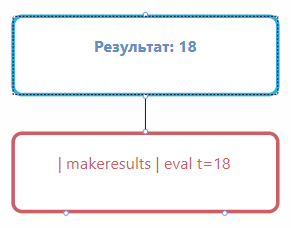

Введение в DataCAD
DataCAD – средство визуальной разработки веб-приложений, предназначенных для создания моделей в виде графов, с возможностью подключения к данным и их обработке на WDC.Платформе.
DataCAD реализован в виде пользовательского одностраничного модульного веб-приложения с открытой архитектурой, т.е. имеется некоторый первичный набор плагинов, который может впоследствии расширяться.
Система DataCAD является low-code платформой, доступной для работы бизнес-аналитиков и продвинутых пользователей.
Работа в DataCAD делится на два этапа:
-
Пользователь создаёт Рабочий стол приложения – размещает модули интерфейса – панели, настраивает связи между ними.
-
Пользователь наполняет приложение рабочими моделями, содержащими графы, расчёты и т.д.
Приложения сохраняются на уровне домашней страницы DataCAD:
Рабочий стол – рабочая область DataCAD, используемая в процессе разработки пользовательского приложения с расположенными на ней графическими компонентами: панелями.
Панель – визуальный компонент DataCAD, являющийся составным элементом рабочего стола, на котором ведётся разработка пользовательских графов.
Граф – совокупность узлов и связей между ними.
Примитив – элемент графа: узел, связь.
Узел – простейший элемент графа, примитив. Узел имеет название, набор входных и выходных портов, набор свойств. В DataCAD предусмотрены узлы нескольких типов. Они собраны в библиотеке примитивов для заимствования пользователем в процессе работы.
Свойство узла – настраиваемая характеристика узла, которое может содержать выражение или константу для расчета значения определенного типа.
Порт – именованный компонент внутри узла, который содержит:
-
имя, отражающее назначение порта – входной (inPort), выходной (outPort);
-
значение, которое переносится по связи из другого узла (inPort) или передаётся в другой узел (outPort).
Полотно примитивов (LiveDashPanel) – панель, на которой пользователь создаёт граф с использованием библиотеки примитивов.
Библиотека примитивов – панель, содержащая образцы примитивов – узлов и связей, которые пользователь может разместить на полотне примитивов для построения графа. Примитивы объединены в тематические группы:
-
Связи.
-
Элементы электрических схем.
-
Логические узлы.
-
Рисковые примитивы типа.
Начало работы
После запуска DataCAD открывается пустой рабочий стол – рабочая область, на которой можно располагать различные панели интерфейса.
Работа в DataCAD ведётся в два этапа:
-
Сначала Вы создаёте рабочий стол.
-
Затем на созданном рабочем столе разрабатываете граф.
Создание рабочего стола
Нажмите на .
В появившемся окне укажите название рабочего стола и нажмите кнопку "Сохранить":
В результате на Домашнюю страницу DataCAD будет добавлен Ваш рабочий стол:
Открываем Ваш рабочий стол:
Пока он пуст.
Сначала займёмся наполнением стола рабочими панелями. Нажмём последовательно на иконки и .
В результате на панели DataCAD Настройка компонента появятся все настройки рабочего стола.
Активируем переключатель Редактирование рабочего стола.

Далее перейдём к добавлению панелей на рабочий стол.
Нам потребуются следующие панели:
-
Панель полотна примитивов (LiveDashPanel) – панель, на которой будут размещаться рабочие элементы.
-
Панель библиотеки примитивов – здесь в тематических группах размещены образцы узлов и связей для построения графа.
-
Панель свойств примитивов (PrimitivePropertiesPanel) – специализированная панель, предназначенная настройки свойств узла и портов.
-
Панель настройки событий и действий (EventSystemPanel) – панель, в которой устанавливается связь между панелями Рабочего стола для передачи данных. В нашей задаче – для передачи и отображения свойств элементов графа.
Откройте список панелей (меню Панели).
Для добавления на Рабочий стол нужной панели следует выбрать её в списке, кликнуть на ней левой кнопкой "мыши", сдвинуть курсор вправо на маленькое окно и снова кликнуть в нём левой кнопкой "мыши":
На Рабочий стол будет добавлена панель:
Позиционируя курсор на контурах добавленных панелей и используя кнопку перемещения , отредактируйте размер и местоположение панели на рабочем столе:
Добавьте на Рабочий стол остальные панели и откорректируйте их при необходимости.
Отключите переключатель Редактирование рабочего стола.
На рабочем столе отобразятся панели в режиме их непосредственного использования:
Каждый примитив имеет свойства. Свойства должны отображаться на Панели свойств примитивов PrimitivePropertiesPanel. Для этого необходимо установить связь между панелями.
На панели EventSystemPanel (Панель системы событий и действий) нажимаем кнопку Добавить новую подписку.
Заполняем поле Название показателя.
В поле Панель группы События выбираем из списка строку:
В поле Событие панели группы События выбираем из списка строку:
Событие BroadcastPrimitiveInfo в дальнейшем обеспечит трансляцию на панель PrimitivePropertiesPanel свойств примитивов, размещённых на панели полотна примитивов.
Далее заполняем группу полей Действия.
Для поля Плагин выбираем значение:
Для поля Действие из списка выбираем строку:
Действие BroadcastPrimitiveInfo обеспечит на панели PrimitivePropertiesPanel отображение свойств примитивов, размещённых на панели полотна примитивов.
Нажимаем кнопку Сохранить:
В результате в списке подписок появится новая активная подписка:
В завершении первого этапа сохраним рабочий стол с помощью кнопки Сохранить на панели DataCAD Настройка компонента.
Теперь перейдём к выполнению поставленной перед нами задачи – созданию графа.
Выполнение задач на рабочем столе
Создание графа с использованием выражений
Перед нами стоит задача разработки графа.
Граф состоит из трёх узлов. Два нижних узла связаны с верхним узлом. На нижних элементах отображаются числовые значения. На верхнем элементе выводится сумма этих чисел.
В DataCAD такие элементы называются примитивами.
На Панели библиотеки примитивов развернём группу "Рисковые примитивы" и перетащим нужные элементы на Панель полотна примитивов.
Важно!
При выборе примитивов следует обращать внимание на наличие у образцов входных, выходных портов, их количество и места размещения.
Нам потребуются два примитива с один выходом и один примитив в двумя входами :
Отредактируем их размер и местоположение. Для активации режима редактирования нужно кликнуть на примитиве, после чего он приобретёт следующий вид:
Теперь между элементами графа нужно установить связи. На Панели библиотеки примитивов развернём группу "Связи" и перетащим нужные элементы на Панель полотна примитивов, соединив нижние примитивы с верхним:
Важно!
Для перемещения всего графа нужно установить курсор в области размещения графа, нажать колёсико "мыши" и передвинуть граф в нужно место.
Масштаб отображения графа на панели можно изменить, прокручивая колёсико "мыши" в нужном направлении.
Каждый элемент графа имеет свойства. Свойства отображаются на Панели свойств примитивов PrimitivePropertiesPanel. В предыдущем разделе мы настроили связь между панелями, что обеспечило трансляцию на панель PrimitivePropertiesPanel свойств элементов графа.
Теперь настроим свойства примитивов.
При построении графа элементам присваиваются идентификаторы, они выводятся на элементах:
В дальнейшем они будут отображены на Панели свойств примитивов при позиционировании на элементе.
Спозиционируем курсор на элементе графа. В Панели свойств примитива отобразится идентификатор примитива и введённый ранее текст на элементе.

Продолжим работу на вкладке Свойства этой панели.
Нажмём на интерактивное поле Создать новое свойство. В поле Название укажем название свойства, используя латинские буквы и символы, и нажмём кнопку Добавить свойство.
Свойство будет добавлено ниже в список свойств:
Открываем это свойство для редактирования, используя иконку .
Поле Тип запроса оставляем без изменений – expression.
А в поле Запрос указываем число – 28.
И нажимаем кнопку Сохранить.
Далее следует введённое свойство Sum1 передать через порт в верхний элемент графа через порты. Для этого открываем вкладку Порты. Находим нужный выходной порт (в нашем случае он один) – outPort1. Открываем его на редактирование по кнопке . И определяем свойство Sum1:
-
Поле Тип запроса оставляем без изменений – expression.
-
В поле Запрос указываем – this.Sum1.
-
Нажимаем кнопку Сохранить.
После чего нажмём кнопку на Панели полотна примитивов. И на Панели свойств примитивов появится заданное число:
А если кликнуть на верхнем элементе графа и открыть вкладку Порты, то для порта inPort2 (порт, к которому была установлена связь от правого нижнего элемента) мы увидим переданное значение – 28.
Аналогичные действия проделаем для правого нижнего элемента, определив ему число 67.
В итоге для верхнего элементе графа на вкладке Порты мы увидим значения, переданные из нижних элементов:
Для отображения на верхнем элементе суммы переданных чисел создадим свойство:
После нажатия на Панели полотна примитивов кнопки мы увидим, что для верхнего элемента на Панели свойств примитивов появилась сумма чисел из нижних элементов:
Теперь выведем числа и их сумму на элементы вместо отображённых по умолчанию идентификаторов.
При двойном клике по примитиву на нём откроется интерактивная панель для ввода и форматирования текста. Последовательно для всех элементов введём текст и отформатируем его:
-
Левый нижний элемент – Число 1: \$Sum1\$.
-
Правый нижний элемент – Число 2: \$Sum2\$.
-
Верхний элемент – Итог: \$Sum3\$.
Получим требуемый граф:
Сохраняем граф на сервере для последующего использования. Для этого на Панели полотна примитивов:
-
Введём имя файла графа – Graph.
-
Нажмём кнопку .
Создание графа с использованием OTL-запроса
Есть очередная задача по разработке графа, которую нам нужно решить.
Граф состоит из двух узлов. Нужно в нижнем узле выполнить otl-запрос и отобразить результат его выполнения на верхнем узле.
Создадим новый граф – Graph4 из двух узлов.
Для нижнего узла добавим свойство с типом "OTL":
-
В поле Тип запроса установим значение – OTL.
-
В поле Запрос пишем OTL-запрос: | makeresults | eval t=18.
-
Нажимаем кнопку Сохранить.
Далее нажимаем кнопку на Панели полотна примитивов. И на Панели свойств примитивов для свойства otl1 во вкладке Свойства появится результат выполнения otl-запроса:
Теперь настроим вывод числа из otl-запроса. Для этого создаём новое свойство otl2 с типом expression:
-
Поле Тип запроса оставляем без изменений – expression.
-
В поле Запрос указываем – this.otl1[0][`t`].
-
Нажимаем кнопку Сохранить.
И наконец, выведем полученное число на верхний узел графа.
Сначала передадим число в верхний узел через выходной порт нижнего узла.
На Панели свойств примитивов для свойства otl1 во вкладке Порты находим порт outPort1, жмём кнопку :
-
Поле Тип запроса оставляем без изменений – expression.
-
В поле Запрос указываем – this.otl2.
-
Нажимаем кнопку Сохранить.
Далее нажимаем кнопку на Панели полотна примитивов. После чего на Панели свойств примитивов для порта outPort1 нижнего узла появится нужное значение:
Это значение будет передано во входной порт inPort1 верхнего узла:
Для отображения полученного числа кликнем дважды по верхнему узлу. На нём откроется интерактивная панель для ввода и форматирования текста. Введём текст и отформатируем его:
В результате получаем требуемый граф:

Сохраняем граф на сервере для последующего использования.